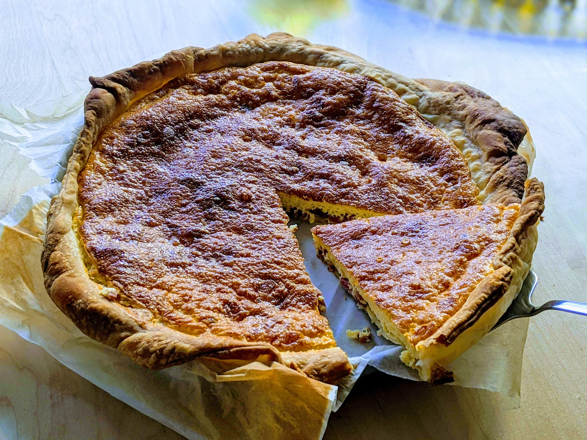

..@..♦.D.

|
Présentation 
|
Blog
|
Recettes
|

Pour une tarte, en fonction de la taille du moule :
Note : si on a trop de garniture et que ça ne tient pas dans la pâte, s'assurer que tous les morceaux solides soient sur la pâte, et conserver le reste pour plus tard y ajouter quelques œufs et en faire une base d'omelette ou d'œufs brouillés améliorée (le lard donne un chouette goût en plus).
Note 2 : en Suisse, trouver de la crème fraîche épaisse est essentiellement impossible (surtout, ne pas utiliser la "crème fraîche" que l'on peut trouver en supermarché, c'est un piège, c'est en fait de la crème acidulée, totalement inadaptée pour une quiche). On peut la remplacer par une moitié de crème liquide allégée, et une moitié de double crème de la Gruyère.